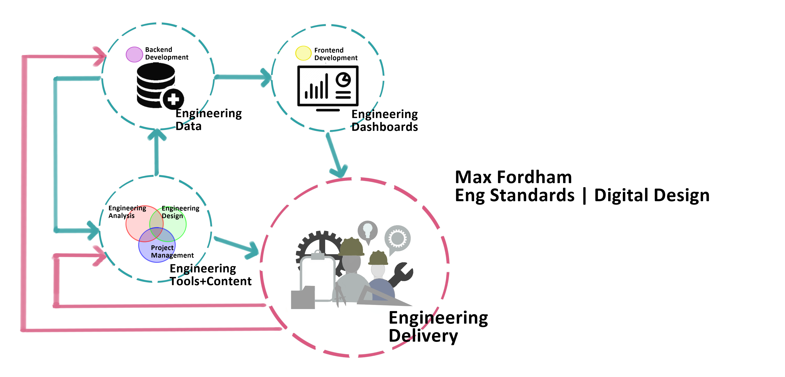

1. Intro¶
Max Fordham is using code to:
streamline workflows
develop robust engineering tools
communicate insight from data and create an ongoing feedback loop from lessons learnt.
This drive came from a desire to “stop re-inventing the wheel”. This statement has 2-fold implications to internal software development:
By creating internally developed code we are formally recording common engineering processes that are observed on many projects
Many of the technical answers to the problems that we face exist in the external world as open-source code. Use it! (The one caveat to this is to use as few dependencies as is practical, and to preference to open-source projects with active communities / well-resourced backers.)
This documentation sets out Max Fordham’s engineering development environment and the tools / workflows / packages that should be used to ensure consistency.
Code development within engineering generally falls into 1 of the 2 categories:
standalone internally developed tools
software automation (i.e. pyRevit, IES VEscripts, Rhino + Grasshopper + Python)
As a general rule, any tools that has potentially general use (i.e. outside of a specific software package) should be developed independently of our software tools. Software automation scripts can then be made to connect data to these independent tools (an example of this is scheduling: the schedules are generated from the JupyterHub, but can be supplied data from the Revit model).

Secret config data
each individual user should have a file saved here:
/mfcode_docs/book/docs/_secret_config.toml
that follows the same format as:
/mfcode_docs/book/docs/_secret_config_template.toml
with their secret config details. _secret_config.toml should not be shared.
in the docs jinja style pseudo-code is used to indicate what vars from the _secret_config.toml file should be used.
This is an example of an embedded pdf